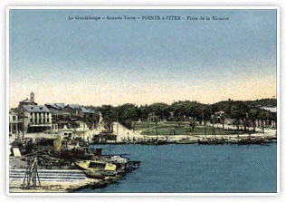

VOTRE NOTAIRE EST VOTRE MEILLEUR ATOUT :
Il ne se contente pas de mettre en oeuvre vos droits.
Il est avant tout un conseiller : compétent et à votre écoute, il demeure votre garantie d’éviter les difficultés et de faire les bons choix.
-
Dans le cadre de votre vie familiale : contrat de mariage, donation entre époux, PACS, changement de régime, divorce, reconnaissance ou adoption d’enfant, donation, règlement de succession, testament, partage…
-
Dans le cadre de la gestion de votre patrimoine : achat, vente, prêts hypothécaires, S.C.I. (Société Civile Immobilière) de famille...
- Dans le cadre de votre vie professionnelle : choix, constitution et vie de votre société, cession de fonds de commerce, promotion immobilière et lotissement, transmission des entreprises, baux commerciaux...